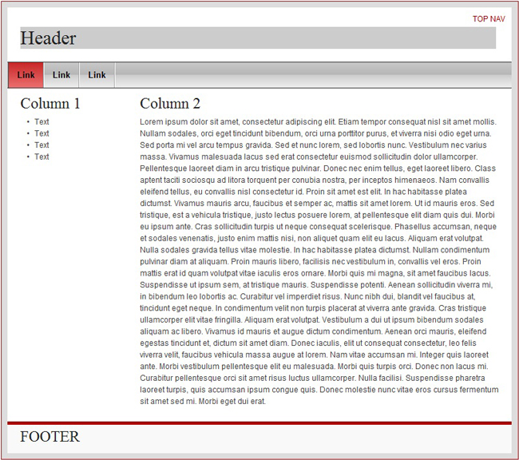
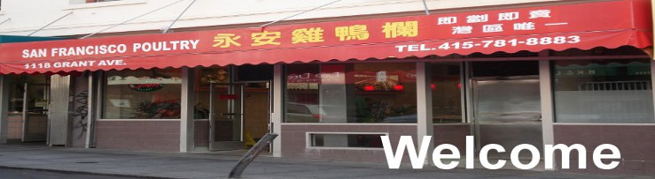

HTML Javascript (Jquery libraries) CSS (open source css framework YAML) PHP
Wing on Poultry Inc., is a poultry store that is located in San Francisco i was contracted to build their small business website to promote their products. The small business website consisted of three webapges a home page, a product and a contact page. I developed this project using Html, an open source CSS framework to speed up the layout design, Jquery to add up some interactivity, php to create the contact page and to manipulate image i used open souce tools such as Inkscape and Gimp. This project lasted three months from December 2010 to February 2011. you can visit the website at http://www.wingonsfpoultry.com
For this project, i was debating on which layout to choose, one column or two column, since the website probably won't have that much content, and it would be a problem leaving that many whites spaces which will not be that much appealing to the visitors. At the end, I decided to go for the two column layout since it would give me the balance with content and white spaces.
Here is a demo of the layout that i choose for the website
Update: the picture demo above was the first version of this website. Last year i updated the layout of the website and i decided to use one column and distribute all the content. you can see it by clicking on the link i provided above.
In order to speed up the development of this layout, i used a open source framework called YAML, because it offers me the flexibility to build a consistent layout, and its compatible with many common used browsers.
here is a snipet of a CSS look using YAML
/**
* Design of Additional Layout Elements | Gestaltung weiterer Layoutelemente
*
* @section layout-misc
*/
/** Business hours class **/
div.hours{
font-size:14px;
border:thin solid #B00;
clear:both;
}
div.hours h3{
text-align:center;
background-color:#A00;
color:white;
font-weight:bold;
}
div.hours span{
background-color:#A00;
color:white;
}
div.hours p{
padding-left:10px;
padding-top:10px;
font-weight:bold;
}
/** -------------------- **/
Following the requirements for this website, it will contain three webpages which are:
For the product page i added a little bit of interactivity to list of products in which once you place the cursor over the product it will display the information about it. As you can see in the figure below, it will display the text if the cursor is on top of the item.
i used jquery to perform this little animation and here is the code:
$(".description, .noshow").hover(function(event){$(this).removeClass('noshow').addClass('show')},
function(){$(this).addClass('noshow').removeClass('show');}
);
Finally for the last webpage, i use PHP to create the contact form so it sends the message directly to the store owner below you can see a snipet of the code:
if (isset($_REQUEST['email']))
{//if "email" is filled out, proceed
//check if the email address is invalid
$mailcheck = spamcheck($_REQUEST['email']);
if ($mailcheck==FALSE)
{
echo "";
}
else
{//send email
$to='123456@gmail.com';
$email = $_REQUEST['email'] ;
$subject = 'Comments from ' . $_REQUEST['name'] ;
$comments = $_REQUEST['comments'] ;
mail($to, $subject, $comments, 'From:'. $email );
echo "<h3>Thank you for your comments. We will get back to you as soon as possible</h3>";
}
}
else
Update: as per request of the owner, i took out the form and just provided the e-mail address for contacts
As for the banners on the webpages i took pictures of the front of the store, products and a picture of the store to make the banners. I used open source Inkscape and Gimp here is the home banner.
to see the live website please to go to http://www.wingonsfpoultry.com